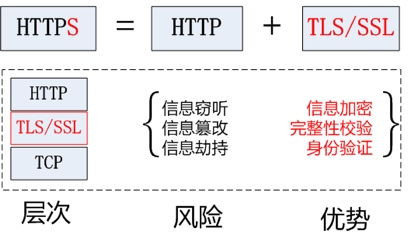
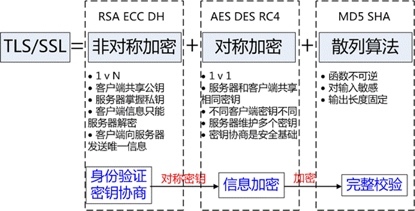
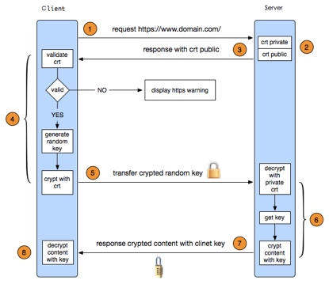
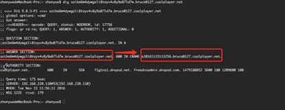

HTTPS技术简要介绍
背景
随着互联网技术应用的广泛应用，越来越多的信息在网络上被交换和利用，网络信息安全也就成为了一个被关注的热点。我们当前的互联网服务多数是基于HTTP协议之上进行开发设计，但是由于HTTP的设计缺陷，信息数据在传输过程中有极大的泄露风险，HTTPS技术也应运而生。
近日，各大互联网公司纷纷宣布旗下服务必须强制使用HTTPS技术进行网络通讯。如2017年1月1日苹果iOS应用推行ATS安全标准，将强制使用HTTPS安全连接；谷歌Chrome将把所有的HTTP网站标记为「不安全」；在国内热火朝天的小程序也要求必须使用HTTPS请求等。
本文将对HTTPS的定义、工作原理、使用、与HTTP的不同等方面对HTTPS技术进行简要的介绍。
HTTS工作原理
HTTP在安全方面的缺陷
HTTP本身是明文传输的，没有经过任何安全处理。例如用户在百度搜索了一个关键字，比如“苹果手机”，中间者完全能够查到到这个信息，并且有可能打电话过来骚扰用户。也有一些用户投诉使用百度时，发现首页或者结果页浮了一个很长很大的广告，这也肯定是中间者往页面插的广告内容。如果劫持技术比较低劣的话，用户甚至无法访问百度。
这里提到的一些中间者主要指一些网络节点，使用户数据在浏览器和百度服务器之间传输必须要经过的节点，比如WIFI热点、路由器、防火墙、反向代理、缓存服务器等。
在HTTP协议下，中间者可以随意嗅探用户搜索内容，窃取隐私甚至篡改网页。不过HTTPS是这些劫持行为的克星，能够完全有效地防御。总体来说，HTTPS协议提供了三个强大的功能来对抗上述的劫持行为：
- 内容加密。浏览器到百度服务器的内容都是以加密形式传输的，中间者无法直接查看原始内容
- 身份认证。保证用户访问的是百度服务，即使被DNS劫持到了第三方站点，也会提醒用户没有访问百度服务
- 数据完整。防止内容被第三方冒充或篡改
HTTPS的定义
HTTPS（Hypertext Transfer Protocol Secure，超文本传输安全协议）是一种网络安全传输协议。在计算机网络上，HTTPS经由超文本传输协议进行通信，但利用SSL/TLS来对数据包进行加密。HTTPS开发的主要目的，是提供对网络服务器的身份认证，保护交换数据的隐私与完整性。简单而言HTTPS就是在HTTP协议发送数据的过程中使用SSL协议对数据进行加密，从而保证数据的安全。
SSL目前的版本是3.0，被IETF（Internet Engineering Task Force）定义在RFC 6101中，之后IETF对SSL 3.0进行了升级，于是出现了TLS（Transport Layer Security）1.0，定义在RFC 2246。实际上我们现在的HTTPS都是用的TLS协议，但是由于SSL出现的时间比较早，并且依旧被现在浏览器所支持，因此SSL依然是HTTPS的代名词，但无论是TLS还是SSL都是上个世纪的事情，SSL最后一个版本是3.0，今后TLS将会继承SSL优良血统继续为我们进行加密服务。目前TLS的版本是1.2，定义在RFC 5246中，暂时还没有被广泛的使用。

TLS/SSL工作原理
HTTPS 协议的主要功能基本都依赖于 TLS/SSL 协议，本节分析安全协议的实现原理。
TLS/SSL 的功能实现主要依赖于三类基本算法：散列函数 Hash、对称加密和非对称加密，其利用非对称加密实现身份认证和密钥协商，对称加密算法采用协商的密钥对数据加密，基于散列函数验证信息的完整性。

散列函数Hash，常见的有MD5、SHA1、SHA256，该类函数特点是函数单向不可逆、对输入非常敏感、输出长度固定，针对数据的任何修改都会改变散列函数的结果，用于防止信息篡改并验证数据的完整性;对称加密，常见的有 AES-CBC、DES、3DES、AES-GCM等，相同的密钥可以用于信息的加密和解密，掌握密钥才能获取信息，能够防止信息窃听，通信方式是1对1;非对称加密，即常见的 RSA 算法，还包括 ECC、DH 等算法，算法特点是，密钥成对出现，一般称为公钥(公开)和私钥(保密)，公钥加密的信息只能私钥解开，私钥加密的信息只能公钥解开。因此掌握公钥的不同客户端之间不能互相解密信息，只能和掌握私钥的服务器进行加密通信，服务器可以实现1对多的通信，客户端也可以用来验证掌握私钥的服务器身份。
在信息传输过程中，散列函数不能单独实现信息防篡改，因为明文传输，中间人可以修改信息之后重新计算信息摘要，因此需要对传输的信息以及信息摘要进行加密;对称加密的优势是信息传输1对1，需要共享相同的密码，密码的安全是保证信息安全的基础，服务器和N个客户端通信，需要维持N个密码记录，且缺少修改密码的机制;非对称加密的特点是信息传输1对多，服务器只需要维持一个私钥就能够和多个客户端进行加密通信，但服务器发出的信息能够被所有的客户端解密，且该算法的计算复杂，加密速度慢。
结合三类算法的特点，TLS的基本工作方式是，客户端使用非对称加密与服务器进行通信，实现身份验证并协商对称加密使用的密钥，然后对称加密算法采用协商密钥对信息以及信息摘要进行加密通信，不同的节点之间采用的对称密钥不同，从而可以保证信息只能通信双方获取。
HTTPS的工作原理
HTTPS其实是有两部分组成：HTTP + SSL/TLS，也就是在HTTP上又加了一层处理加密信息的模块。服务端和客户端的信息传输都会通过TLS进行加密，所以传输的数据都是加密后的数据。请求流程如图所示：

客户端发起HTTPS请求
与HTTP发送请求类似，用户在浏览器或者通过其他方式请求一个HTTPS连接如（https://www.baidu.com），然后连接到服务器的443端口。在此过程中客户端会发送一个密文族给服务器，密文族是浏览器所支持的加密算法的清单。服务器配置
采用HTTPS协议的服务器必须要有一套数字证书，该证书可以自己制作，也可以向组织申请。区别就是自己制作的证书需要客户端验证通过才可以继续访问，而使用受信任的公司申请的证书则不会弹出提示页面。
证书其实就是一对公钥和私钥，可以这么理解，公钥就是一把锁头，私钥就是这把锁的钥匙，锁头可以给别人对某个东西进行加锁，但是加锁完毕之后，只有持有这把锁的钥匙才可以解锁看到加锁的内容。
前面说过客户端会传送密文族给服务端，服务端则会从这些密文族中，挑选出一个，比如百度采用的就是RSA公钥加密算法来区分证书签名和交换密钥，通过AES算法来加密数据，至于GCM则是用来校验信息的。传送证书
证书将在接收到客户端请求后由服务器端发送到客户端。该证书包含了公钥、证书的颁发机构、过期时间等重要信息。客户端解析证书
这部分工作是由客户端的TLS来完成的，首先会验证公钥是否有效，如颁发机构、过期时间等等，如果发现异常则会弹出一个警告框，提示证书存在问题。如果证书没有问题，那么就生成一个随机值，然后用证书对该随机值进行加密。
注意一下上面提到的“发现异常”。证书中会包含数字签名，该数字签名是加密过的，是用颁发机构的私钥对本证书的公钥、名称及其他信息做hash散列加密而生成的。客户端浏览器会首先找到该证书的根证书颁发机构，如果有，则用该根证书的公钥解密服务器下发的证书，如果不能正常解密，则就是“发现异常”，说明该证书是伪造的。传送加密信息
这部分传送的是用证书加密后的随机值，目的就是让服务端得到这个随机值，然后客户端和服务端的通信就可以通过这个随机值生成对称加密的秘钥来进行加密和解密了。服务端解密信息
服务端用私钥解密后，得到了客户端传过来的随机值，至此一个非对称加密的过程结束，至此TLS利用非对称加密实现了身份认证和密钥协商。然后把内容通过该值进行对称加密。传输加密后的信息
当对称加密秘钥生成完成之后，服务器和客户端之间的信息通信将被该秘钥进行加密。加密后进行正常的HTTP的信息发送，该信息可在客户端被揭秘还原。客户端解密信息
客户端用之前生成的随机值解密服务端传送过来的信息，于是获取了解密后的内容，至此一个对称加密的过程结束，看到对称加密是用于对服务器待传送给客户端的数据进行加密用的。整个过程即使第三方监听了数据，也束手无策。
HTTPS的使用
SSL证书类型
通常来说，SSL证书分为三大类，他们的安全性是递增的，当然价格和安全系数成正比。
- DV（Domain Validation Certificate）。DV证书适合个人网站使用，申请证书时，CA只验证域名信息。几分钟之内就能签发。
- OV（Organization Validation Certificate）。OV证书需要认证公司的信息。1-2天签发。
- EV（Extended Validation Certificate）。EV证书的认证最为严格，一般会要求提供纸质材料。签发时间也较久。
SSL证书供应商简单对比
Let's Encrypt是国外一个公共的免费SSL项目，由Linux基金会托管，由Mozilla、思科、Akamai、IdenTrust和EFF等组织发起，目的就是向网站自动签发和管理免费证书，以便加速互联网由HTTP过渡到HTTPS。
StartSSL是StartCom公司旗下的SSL证书，应该算是免费SSL证书中的鼻祖，最早提供完全免费的SSL证书并且被各大浏览器所支持的恐怕就只有 StartSSL证书了。首次申请StartSSL免费SSL证书是免费一年，但是你可以在第二年继续续期。
七牛免费SSL，七牛最近和亚洲诚信合作推了赛门铁克Symantec签发的DV证书。
对比结果：
- 申请便利性：StartSSL和七牛的申请起来都相对便利，Let's Encrypt对环境要求比较多。
- 有效期：StartSSL和七牛都是一年，Let's Encrypt 90天。
- 证书兼容性：StartSSL 的一年免费 DV SSL 已经被 Chrome、Mozilla 封杀。要慎重选择。Let's Encrypt总体来说兼容性还不错，不过肯定是赛门铁克的兼容性最好。
- 售后：免费证书其实基本都没啥售后可言，Let's Encrypt 基本上只能求助于社区，StartSSL和七牛都有官方客服可以咨询，七牛对中文服务的支持更好。
七牛免费证书的申请和使用
在个人面板->证书管理申请证书
申请完证书后跳转到证书列表而不是订单列表，具体设置要在订单列表中完成。
DNS验证
- 记录类型选择 CNAME
主机记录填写 cnamekey，点击复制 Key 是复制全部字段（注：万网和DNSpod平台cnamekey不需要主域名部分），见下图
记录值填写cnamevalue，复制全部字段，见图

其他选项默认即可，见图
CName Key 的 DNS 解析指向 CName Value 操作完成后，系统会循环自动检测验证，最长不超过24小时，您可以用 dig 命令来自我检测下DNS解析是否配置成功，见图

Hadoop搭建实例
本次课程要求自主搭建Hadoop集群环境，并进行MapReduce作业操作
本文以统计知乎用户地域分布情况为例进行统计展示
数据获取与格式说明
数据获取
实验数据采用爬虫方式从知乎进行爬取，并保存进入数据库，总数据量3383054条。为了后续处理方便，我们将数据从数据库中倒成csv文件进行存储。
数据爬取代码：知乎爬虫
数据格式
导出的数据格式为：id,name,headline,gender,school,major,address,industry,company,job

Hadoop集群搭建
Hadoop是一个由Apache基金会所开发的分布式系统基础架构。用户可以在不了解分布式底层细节的情况下，开发分布式程序。充分利用集群的威力进行高速运算和存储。
本次课程实例基于ubuntu12.04、jdk1.8.111、hadoop2.7.3进行说明，其中ubuntu服务器以虚拟机的形式搭建。
ubuntu虚拟机搭建
虚拟机创建的步骤在本文中不加以介绍，如有需要请自行百度。ps.为了简便操作，我们可以先创建并配置一台虚拟机然后进行克隆。为了简便操作，可以使用
sudo apt-get install ubuntu-desktop安装ubuntu的图形操作界面。建立软件目录
为了后续更好的管理我们按照的软件。我们使用mkdir命令，建立软件的安装目录。命令：
sudo mkdir /usr/softjdk的安装与环境变量设置
- 首先我们从Oracle的官网上下载jdk的压缩文件。下载地址：jdk;
- 使用
tar -xzvf 文件名对安装包进行解压; - 将解压后的文件夹移至上一步我们建立的软件安装目录。
mv jdk1.8.0_111/ /usr/soft 设置java所需要的环境变量:
- 打开配置文件
sudo vi /etc/profile； - 在配置文件中加入
export JAVA_HOME="/usr/soft/jdk1.8.0_111"； - 在配置文件中加入
export PATH="$PATH:$JAVA_HOME/bin"； - 保存配置文件退出；
- 使用source命令让配置文件生效，
source /etc/profile
- 打开配置文件
调用
javac -version命令，检查配置是否生效,安装是否成功。
Hadoop的安装与环境变量设置
- 从Apache Hadoop网站上下载对应的Hadoop安装包。下载地址：Hadoop2.7.3；
- 使用
tar -xzvf 文件名对安装包进行解压; - 将解压后的文件夹移至上一步我们建立的软件安装目录。
mv Hadoop-2.7.3 /usr/soft - 打开配置文件
sudo vi /etc/profile； - 在配置文件中加入
export PATH="$PATH:$JAVA_HOME/bin:/usr/soft/hadoop-2.7.3/bin:/usr/soft/hadoop-2.7.3/sbin"； - 保存配置文件退出；
- 使用source命令让配置文件生效，
source /etc/profile - 调用
Hadoop version命令，检查配置是否生效,安装是否成功。
SSH免密码登录配置
- 使用
sudo apt-get install ssh安装完整的ssh客户端； - 使用
ssh-keygen -t rsa -P '' -f ~/.ssh/id_rsa生成公私钥； - 使用
cat ~/.ssh/id_rsa.pub >> ~/.ssh/authorized_keys将公钥复制； - 使用
ssh localhost命令检验是否可以免密码登录系统。
- 使用
修改服务器的名称
- 使用
sudo vi /etc/hostname,修改服务器的名称 - 重启服务器使配置生效
- 使用
配置Hadoop配置文件
Hadoop的配置文件位于其安装目录下的etc/hadoop/目录下
修改yarn-site.xml，内容如下（master代表主服务器名）：
<configuration> <property> <name>fs.defaultFS</name> <value>hdfs://master/</value> </property> <property> <name>hadoop.tmp.dir</name> <value>~/hadoop/data</value> </property> </configuration>修改hdfs-site.xml，内容如下:
<configuration> <property> <name>dfs.replication</name> <value>3</value> </property> </configuration>修改mapred-site.xml（此文件需要从mapred-site.xml.template复制），内容如下：
<configuration> <property> <name>mapreduce.framework.name</name> <value>yarn</value> </property> </configuration>修改yarn-site.xml,内容如下：
<configuration> <property> <name>yarn.resourcemanager.hostname</name> <value>master</value> </property> <property> <name>yarn.nodemanager.aux-services</name> <value>mapreduce_shuffle</value> </property> <property> <name>yarn.resourcemanager.address</name> <value>master:8032</value> </property> <property> <name>yarn.resourcemanager.scheduler.address</name> <value>master:8030</value> </property> </configuration>修改slaves文件，将附属机主机名添加入内，每行一个，样例为:
s1 s3
克隆宿主机，配置hosts文件
- 使用VM的克隆功能，克隆虚拟机，并依次修改主机名
根据实际IP修改各个机器的hosts文件，ip查看可以使用
ifconfig命令，样例如下：127.0.0.1 localhost 10.104.234.203 master 182.254.216.245 s1 123.207.252.11 s2 123.207.24.98 s3
格式化HDFS文件系统，执行
hdfs namenode -format命令，对HDFS进行格式化。启动Hadoop集群
- 启动文件系统,
start-dfs.sh; - 启动yarn，
start-yarn.sh; - 可以使用
jps命令，检查各个服务的启动情况
- 启动文件系统,
统计程序的编写与运行
本次实验所用的MapReduce程序采用Maven的方式进行构建，具体操作可以参考文章：Maven构建Hadoop工程
编写Mapper类，本次我们实现的功能从原理上与Hadoop自带的WordCount实验非常相似。
package com.swu.count; import java.io.IOException; import org.apache.hadoop.io.IntWritable; import org.apache.hadoop.io.Text; import org.apache.hadoop.mapreduce.Mapper; public class CountMapper extends Mapper<Object, Text, Text, IntWritable> { private final static IntWritable one = new IntWritable(1); private Text word = new Text(); @Override protected void map(Object key, Text value, Mapper<Object, Text, Text, IntWritable>.Context context) throws IOException, InterruptedException { // 获取每一行数据，并以逗号为基准进行分割 String[] data = value.toString().split(","); // 设置word的key为地址信息 word.set(data[5]); // 设置value为1 context.write(word, one); } }编写Reducer类。
package com.swu.count; import java.io.IOException; import org.apache.hadoop.io.IntWritable; import org.apache.hadoop.io.Text; import org.apache.hadoop.mapreduce.Reducer; public class CountReduce extends Reducer<Text, IntWritable, Text, IntWritable> { private IntWritable result = new IntWritable(); private Text keyEx = new Text(); @Override protected void reduce(Text key, Iterable<IntWritable> values, Reducer<Text, IntWritable, Text, IntWritable>.Context context) throws IOException, InterruptedException { int sum = 0; // 遍历value相加 for (IntWritable val : values) { sum += val.get(); } // 返回新的key-value result.set(sum); keyEx.set(key); context.write(keyEx, result); } }编写Comparator类，用于第二次作业的排序。
package com.swu.count; import org.apache.hadoop.io.IntWritable; import org.apache.hadoop.io.WritableComparable; public class CountComparator extends IntWritable.Comparator { @Override public int compare(byte[] b1, int s1, int l1, byte[] b2, int s2, int l2) { // TODO Auto-generated method stub return -super.compare(b1, s1, l1, b2, s2, l2); } public int compare(WritableComparable a, WritableComparable b) { // TODO Auto-generated method stub return -super.compare(a, b); } }编写主方法。
package com.swu.count; import org.apache.hadoop.conf.Configuration; import org.apache.hadoop.fs.FileSystem; import org.apache.hadoop.fs.Path; import org.apache.hadoop.io.IntWritable; import org.apache.hadoop.io.Text; import org.apache.hadoop.mapreduce.Job; import org.apache.hadoop.mapreduce.lib.input.FileInputFormat; import org.apache.hadoop.mapreduce.lib.output.FileOutputFormat; import org.apache.hadoop.util.GenericOptionsParser; import java.util.Random; import org.apache.hadoop.mapreduce.lib.output.SequenceFileOutputFormat; import org.apache.hadoop.mapreduce.lib.input.SequenceFileInputFormat; import org.apache.hadoop.mapreduce.lib.map.InverseMapper; public class Main { public static void main(String[] args) throws Exception { Configuration conf = new Configuration(); String[] otherArgs = new GenericOptionsParser(conf, args).getRemainingArgs(); if (otherArgs.length != 2) { System.err.println("Usage: zhihuCount <in> <out>"); System.exit(2); } Path tempDir = new Path("wordcount-temp-" + Integer.toString(new Random().nextInt(Integer.MAX_VALUE))); // 定义一个临时目录 Job job = new Job(conf, "zhihuCount"); job.setJarByClass(Main.class); try { job.setMapperClass(CountMapper.class); job.setCombinerClass(CountReduce.class); job.setReducerClass(CountReduce.class); job.setOutputKeyClass(Text.class); job.setOutputValueClass(IntWritable.class); FileInputFormat.addInputPath(job, new Path(otherArgs[0])); FileOutputFormat.setOutputPath(job, tempDir); // 先将词频统计任务的输出结果写到临时目录中,下一个排序任务以临时目录为输入目录。 job.setOutputFormatClass(SequenceFileOutputFormat.class); if (job.waitForCompletion(true)) { Job sortJob = new Job(conf, "sort"); sortJob.setJarByClass(Main.class); FileInputFormat.addInputPath(sortJob, tempDir); sortJob.setInputFormatClass(SequenceFileInputFormat.class); /* InverseMapper由hadoop库提供，作用是实现map()之后的数据对的key和value交换 */ sortJob.setMapperClass(InverseMapper.class); /* 将 Reducer 的个数限定为1, 最终输出的结果文件就是一个。 */ sortJob.setNumReduceTasks(1); FileOutputFormat.setOutputPath(sortJob, new Path(otherArgs[1])); sortJob.setOutputKeyClass(IntWritable.class); sortJob.setOutputValueClass(Text.class); /* * Hadoop 默认对 IntWritable 按升序排序，而我们需要的是按降序排列。 因此我们实现了一个 * IntWritableDecreasingComparator 类, 并指定使用这个自定义的 Comparator * 类对输出结果中的 key (词频)进行排序 */ sortJob.setSortComparatorClass(CountComparator.class); System.exit(sortJob.waitForCompletion(true) ? 0 : 1); } } finally { FileSystem.get(conf).deleteOnExit(tempDir); } } }将写好的程序编译为jar包(注意指定Main方法)，上传至服务器。
执行
hadoop jar XXX.jar /inputFile /outputFile，执行作业。
结果展示与说明
上述作业结束后，我们就可以通过查询输出文件得到我们的统计结果。本次实验统计结果如下：

输出文件如下：

相关代码
本次实验相关代码和所用的数据资料，均已上传至码云仓库（OSChina git）地址为：HadoopPractice
Copyright © 2016 swuzjb